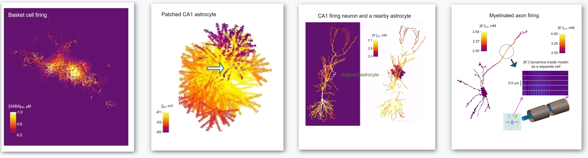

Neuroalgebra
Neuroalgebra
BRAINCELL

Introducing **BRAINCELL 1.0 **: A computation platform for biophysical exploration of brain cells and their environment, on the scale from nanometeres to hundreds of microns. This tool combines theoretical aspects of computational neuroscience with real-world aspects of cell and tissue physiology of the brain, including replication of some common experimental designs. The immersive modelling environment enables neuroscientists and neurologists to investigate brain cellular mechanisms and assess the physiological effects of experimental or therapeutic interventions.
Builduing upon the acclaimed NEURON simulation environment at its core, BRAINCELL
- introduces stochastic morphogenesis and other probabilistic features of cell morphology and function;
- provides freeze, storage, and resumption of the planned or ongoing simulation experiments at any time point, with all current parameters and outputs recalled;
- delivers dynamic interactions of cell physiology with local extracellular environment including ion balances and fluxes;
- enables modelling of non-synaptic connections, such as gap junctions;
- simulates relase, extracellular diffusion and uptake of neurotransmitter(s) from multiple designated cell release sites;
- enables modelling of inter-cellular communications in brain neuropil, such as a diffusion-driven interaction between astrocytes and neurons;
- incroporates all intracellular and cell membrane mechanisms available in NEURON models and databases;
-
adopts all common brain cell databases for cell model import.
- Documentation: From installation to simulations to output analyses, our in-depth user manual provides the guidance you need to harness the full potential of BRAINCELL: BRAINCELL User Guide.
- Ongoing Support: Our commitment to your research extends beyond software provision. We offer continuous support to help you unlock groundbreaking insights into brain functionality.
Building Realistic Cell Models - Characteristic Steps
- Basic cell morphology: Start by importing a 3D reconstructed tree of principal cell processes from neuromorpho.org, another database, or create your own.
- Real-world morphometrics on the nanoscale: Establish or adopt statistical properties of cell nanostructures unattainable for direct reconstruction, such as dendritic spines or astrocyte protrusions.
- Stochastic generation of cellular nanostructures: Leverage BRAINCELL capability to generate large populations of synapses, dendritic spines, or nanoscopic astroglial processes, ensuring their statistical properties align with real-word statistics.
- Tissue volume fraction: To correctly represent the extracellular environment, define experimentally or adopt the distributions of tissue volume fraction occupied by glia and neurons.
- Membrane surface density: To correctly model the dynamic interactions inside and outside cells, define experimentally or adopt the distributions of cell membrane surface areas.
- Functional and parametric data: Enrich your cell models by integrating functional data such as I-V curves, electrical response characteristics, intracellular ion dynamics, neurotransmitter diffusion and uptake parameters, etc.
Embrace the power of BRAINCELL and embark on a journey to unlock the brain machinery through its precise simulation and deeper understanding, on multiple scales.